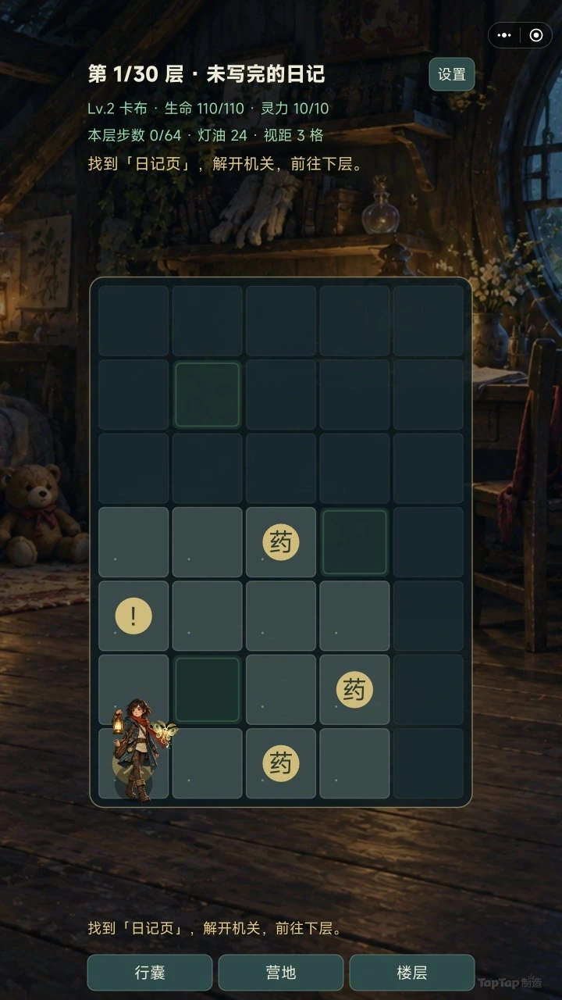
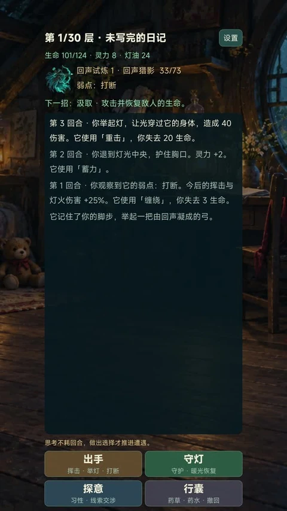

先看灯油，再决定多走哪一格
灯油决定还能探索多远。进入未知地格会消耗灯油，可以优先走向看得见的补给，也可多走几格调查线索。判断一条路线时，把回合前的生命和灵力也一起考虑。


TAPTAP MAKER / 个人 AI 游戏实践
文字冒险 RPG / 灯火探索 / 局外成长
灯火只够再走几步。前方的怪物已经露出意图，你可以迎战，也可以用药撑过去，把剩下的光留给更深处。

TapTap 公开测试 · 2026.10.25 核对
挑一位旅人提灯下坑，在三十层里读线索、找补给、判断战斗或绕行。发现与永久成长会带回局外。下次能换技能、装备和炼药方案，再试一条不同的路线。
页面保留 TapTap 公开展示图。格子探索和回合记录为 V2 本地开发预览。
点击图片可查看原图。

TAPTAP / 游戏入口
打开 TapTap 游戏页，选一位旅人开始下一次探索。